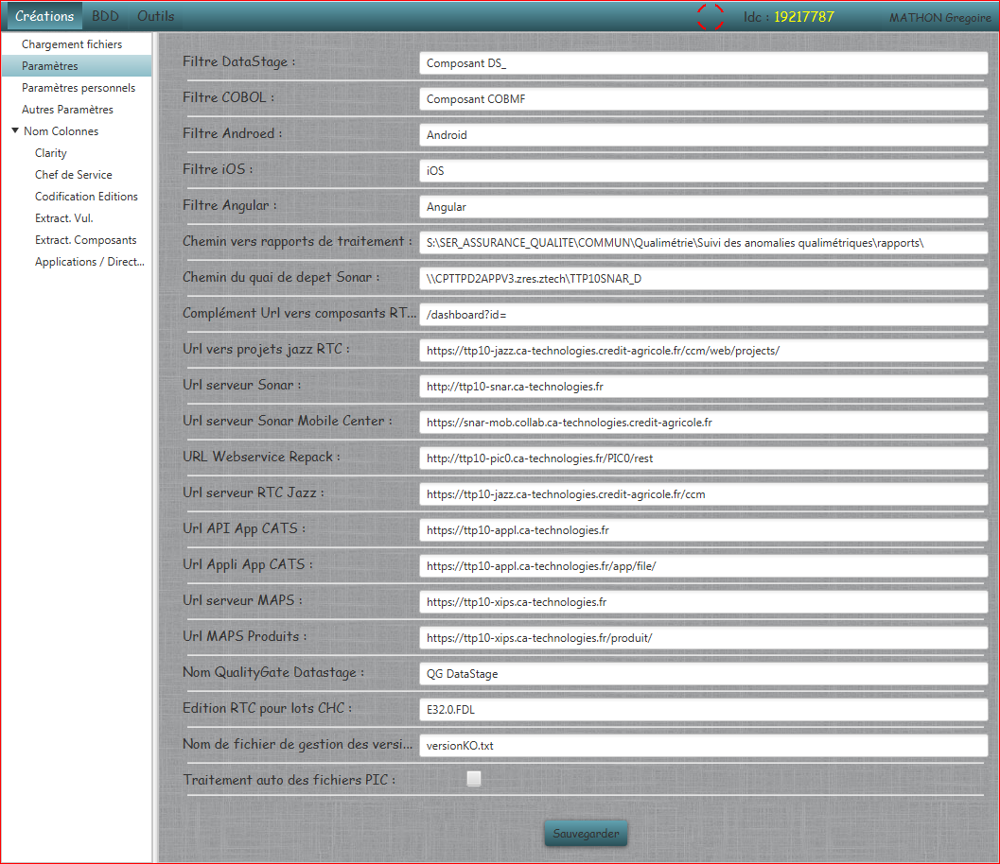

Paramètres
Permet de modifier les paramètres de l'application :

- Filtres : Correspond aux filtres permettant de reconnaître les différents types de composants.
- Chemins : Correspond aux repertoires où sont stockés les fichiers nécessaires aux traitements.
- Url : Adresses vers tous les serveurs nécessaires au fonctionnement de l'application.
- Autres : Tous les autres paramètres de l'application.
Tous les paramètres sont sauvegardés dans un fichier proprietes.xml à la racine de l'application.